flowchart LR
I["<div style='width:4.5em'>Image</div>"] --> E["<div style='width:9em'>Pretrained encoder</div>"]
E --> G["<div style='width:12em'>Global embedding</div>"]
E --> S["<div style='width:12em'>Spatial / patch features</div>"]
G --> C["<div style='width:17em'>Classification head</div>"]
G --> R["<div style='width:17em'>Similarity / retrieval</div>"]
S --> D["<div style='width:17em'>Segmentation or detection head</div>"]
classDef frozen fill:#dbeafe,stroke:#2563eb,color:#172554
classDef train fill:#ffedd5,stroke:#ea580c,color:#7c2d12
class E frozen
class C,D train
6 - Adapting Models
TipLearning Objectives
After this lecture you should be able to:
- Explain the difference between choosing a pretrained encoder, training a task-specific head, and updating the encoder.
- Implement k-NN, linear probing, partial and full fine-tuning, and LoRA for image classification.
- Explain how freezing layers, low-rank updates, and trainable parameter counts affect training and inference.
- Select an adaptation strategy based on the task, representation quality, data, domain shift, and compute budget.
- Recognize how adaptation differs for classification, retrieval, anomaly detection, and dense prediction.
- Design a fair experiment to decide whether a more complex adaptation method is worthwhile.
TipTLDR Recap
The guiding principle: Start with a strong pretrained representation and an inexpensive baseline. Increase adaptation complexity when a controlled experiment demonstrates a meaningful benefit.
| Strategy | What is learned? | Key property |
|---|---|---|
| k-NN on embeddings | No gradient-based training; uses labeled reference images | Fast test of feature quality; stores a reference set |
| Linear probe | A small prediction head | Frozen encoder; features can be cached |
| Partial fine-tuning | Selected encoder layers + head | Encoder becomes task-specific |
| Full fine-tuning | Entire encoder + head | Maximum flexibility; higher training cost |
| LoRA | Low-rank updates to selected weights + head | Fewer trainable parameters, but backpropagation still passes through the encoder |
Three questions before fine-tuning:
- Are the pretrained features already useful for the target task?
- Does the target task require an image-level vector, spatial features, or a similarity embedding?
- Does updating the encoder improve held-out performance enough to justify the added cost?
There is no universal dataset-size threshold that determines the best strategy.
Practical example (DINOv3 ViT-S/16, camera traps, unseen sites): frozen features reach 0.57 macro-F1, any adapted backbone 0.85–0.87. LoRA matches partial fine-tuning with 30× fewer trainable parameters, but trains no faster per epoch than full fine-tuning.
1 Motivation
The previous lecture introduced pretrained image encoders: a neural network maps an image to a representation that can be reused for other tasks. But an ImageNet classifier is not automatically a wildlife classifier, a defect detector, or a segmentation model.
Suppose we have a pretrained encoder and 500 labeled camera-trap images. What should we do?
- Use its embeddings and compare images by similarity?
- Freeze the encoder and train a classifier?
- Change some or all of the encoder weights?
The answer depends on what the representation contains, what the downstream task requires, and what the target data can support. A larger training set is helpful, but is not the only deciding factor.
2 What Can Be Adapted?
It helps to separate two decisions:
- Representation / backbone: Which pretrained model provides useful features? A supervised ImageNet encoder, a self-supervised model such as DINOv2/DINOv3, a vision-language model such as CLIP/SigLIP, or a domain-specific model?
- Adaptation: Which components should be trained for our task?
The output is not always one feature vector per image. An encoder can also produce a grid of patch or spatial features, which is important for localization and segmentation.
NoteExample: One backbone, different tasks
A self-supervised ViT could provide:
- a pooled image embedding for wildlife species classification;
- patch features for land-cover segmentation in satellite images;
- a similarity representation for visual product search.
The head and loss function differ even if the encoder is identical. In practice, some backbones are better suited to a particular task or domain than others.
3 Adaptation Strategies
We start with frozen features and then explore ways to update the encoder. These strategies are options to compare, not a guaranteed ranking of accuracy, cost, or generalization.
flowchart LR
subgraph K["k-NN"]
direction TB
K1["<div style='width:8em'>Early blocks<br/>frozen</div>"] --> K2["<div style='width:8em'>Later blocks<br/>frozen</div>"] --> K3["<div style='width:8em'>k-NN on features<br/>no training</div>"]
end
subgraph A["Linear probe"]
direction TB
A1["<div style='width:8em'>Early blocks<br/>frozen</div>"] --> A2["<div style='width:8em'>Later blocks<br/>frozen</div>"] --> A3["<div style='width:8em'>Head<br/>trainable</div>"]
end
subgraph B["Partial fine-tuning"]
direction TB
B1["<div style='width:8em'>Early blocks<br/>frozen</div>"] --> B2["<div style='width:8em'>Later blocks<br/>trainable</div>"] --> B3["<div style='width:8em'>Head<br/>trainable</div>"]
end
subgraph D["LoRA"]
direction TB
D1["<div style='width:8em'>Early blocks<br/>frozen + LoRA</div>"] --> D2["<div style='width:8em'>Later blocks<br/>frozen + LoRA</div>"] --> D3["<div style='width:8em'>Head<br/>trainable</div>"]
end
subgraph C["Full fine-tuning"]
direction TB
C1["<div style='width:8em'>Early blocks<br/>trainable</div>"] --> C2["<div style='width:8em'>Later blocks<br/>trainable</div>"] --> C3["<div style='width:8em'>Head<br/>trainable</div>"]
end
K ~~~ A ~~~ B ~~~ D ~~~ C
classDef frozen fill:#dbeafe,stroke:#2563eb,color:#172554
classDef train fill:#ffedd5,stroke:#ea580c,color:#7c2d12
classDef mixed fill:#dbeafe,stroke:#ea580c,color:#172554,stroke-width:2px,stroke-dasharray:6 3
classDef none fill:#ffffff,stroke:#6b7280,color:#1f2328,stroke-dasharray:6 3
classDef panel fill:#f6f7f9,stroke:#d5d9e0,color:#1f2328
class K1,K2,A1,A2,B1 frozen
class A3,B2,B3,C1,C2,C3,D3 train
class D1,D2 mixed
class K3 none
class K,A,B,C,D panel
3.1 k-NN Baseline (No Gradient-Based Training)
Store the embeddings of labeled reference images. For each new image, retrieve the \(k\) closest reference embeddings and predict from their labels. This needs no optimizer, but it does need labeled reference data for supervised classification. The neighborhood size, distance metric, and weighting rule are hyperparameters.
NoteCode: k-NN on frozen embeddings
import numpy as np
import timm
import torch
from sklearn.neighbors import KNeighborsClassifier
from sklearn.preprocessing import normalize
# x_train / x_val: preprocessed image batches (N, 3, 224, 224)
# y_train: labels for training images
encoder = timm.create_model("vit_base_patch16_224", pretrained=True,
num_classes=0).eval()
def extract(x, batch_size=32):
features = []
with torch.inference_mode():
for batch in x.split(batch_size):
features.append(encoder(batch).cpu())
return normalize(torch.cat(features).numpy())
Xtr = extract(x_train)
Xval = extract(x_val)
knn = KNeighborsClassifier(n_neighbors=5, metric="cosine")
knn.fit(Xtr, y_train)
pred = knn.predict(Xval)
# Select k on validation data; report test performance only once.For this compact example, x_train and x_val are already preprocessed tensors. Use the normalization, resolution, and interpolation specified by the pretrained model’s configuration. Move model and batches to the same device for GPU execution.
3.2 Linear Probe (Freeze Encoder, Train Head)
Use the pretrained encoder to produce features and train a linear classifier on top. Good performance suggests that the target labels are linearly accessible from the existing representation. A poor result does not prove that the encoder contains no useful information: the information may be encoded nonlinearly or an unsuitable feature extraction choice may have been made.
One major benefit: embeddings can be cached so the encoder does not need to run in every training epoch.
NoteCode: linear probe
import timm
import torch
from torch import nn
encoder = timm.create_model("vit_base_patch16_224", pretrained=True,
num_classes=0).eval()
for p in encoder.parameters():
p.requires_grad_(False)
head = nn.Linear(encoder.num_features, num_classes)
opt = torch.optim.AdamW(head.parameters(), lr=5e-4)
def forward(images):
with torch.no_grad():
z = encoder(images) # pooled pre-classifier features, [B, D]
return head(z)
# Training step: loss = nn.CrossEntropyLoss()(forward(images), labels)
# loss.backward(); opt.step(); opt.zero_grad()The code uses num_classes=0 to remove the original classifier and get pooled features via model(images). For unpooled intermediate features, use forward_features(); pooling/selection can differ between architectures.
3.3 Partial Fine-Tuning (Unfreeze Selected Layers)
The head alone may not be expressive enough for a new task. We can unfreeze some of the backbone, for example the last two transformer blocks. This allows the representation to change while limiting the number of trainable parameters.
Do not assume that only the later layers contain task-relevant information. The best layers to tune depend on the architecture, pretraining objective, and target task. Treat the number of unfrozen blocks as an experimental choice.
NoteCode: partial fine-tuning
import timm
import torch
model = timm.create_model("vit_base_patch16_224", pretrained=True,
num_classes=num_classes)
for p in model.parameters():
p.requires_grad_(False)
# This block structure applies to the selected timm ViT.
for p in model.blocks[-2:].parameters():
p.requires_grad_(True)
for p in model.head.parameters():
p.requires_grad_(True)
opt = torch.optim.AdamW(
[p for p in model.parameters() if p.requires_grad], lr=1e-4
)
# For training, call model.train(), use cross-entropy and validate each epoch.For CNNs with batch normalization, take care with running statistics when freezing layers. The same principle applies, but the modules to unfreeze differ by model architecture.
3.4 Full Fine-Tuning (Update All Weights)
Update the pretrained encoder and the new task head jointly. Full fine-tuning provides the most flexibility, but usually uses more training memory and is more susceptible to overfitting or loss of useful pretrained behavior.
It is not inherently a last resort. Fine-tuning a relatively small model can be feasible with modest data and may outperform more restricted adaptation. The outcome must be measured on held-out data.
NoteCode: full fine-tuning
import timm
import torch
model = timm.create_model("vit_base_patch16_224", pretrained=True,
num_classes=num_classes)
# All model parameters are trainable by default.
opt = torch.optim.AdamW(model.parameters(), lr=5e-5)
# During each epoch:
# model.train()
# logits = model(images)
# loss = torch.nn.functional.cross_entropy(logits, labels)
# loss.backward(); opt.step(); opt.zero_grad()A pretrained encoder typically requires a smaller learning rate than a randomly initialized head. You can use separate optimizer parameter groups (or layer-wise learning-rate decay) rather than the single learning rate shown above.
3.5 LoRA (Parameter-Efficient Fine-Tuning)
LoRA Hu et al. (2021) adapts selected weight matrices without changing the original pretrained weights. For a weight matrix \(W \in \mathbb{R}^{d_{out}\times d_{in}}\), the effective weight is
\[ W' = W + \frac{\alpha}{r}BA, \qquad B \in \mathbb{R}^{d_{out}\times r},\quad A \in \mathbb{R}^{r\times d_{in}}. \]
Only \(A\) and \(B\) are trained (along with the task head). Instead of learning \(d_{out}d_{in}\) parameters for an unconstrained update, the update uses \(r(d_{in}+d_{out})\) parameters. The rank \(r\) controls the capacity of the update. LoRA is particularly useful for adapting or maintaining several variants of a large pretrained model.
Unlike an ordinary bottleneck adapter, LoRA does not insert a new sequential processing layer. It adds a low-rank change to selected existing weight matrices.
NoteCode: LoRA for a ViT classifier
from transformers import AutoModelForImageClassification
from peft import LoraConfig, get_peft_model
model_id = "google/vit-base-patch16-224"
base = AutoModelForImageClassification.from_pretrained(
model_id, num_labels=num_classes, ignore_mismatched_sizes=True
)
config = LoraConfig(
r=8,
lora_alpha=16,
lora_dropout=0.05,
target_modules=["query", "value"], # Hugging Face ViT attention
modules_to_save=["classifier"], # keep the new head trainable
bias="none",
)
model = get_peft_model(base, config)
model.print_trainable_parameters()
# outputs = model(pixel_values=pixel_values, labels=labels)
# loss = outputs.loss
# Train using a standard optimizer over parameters with requires_grad=True.Module names and training wrappers differ between architectures and library versions. Inspect the model’s named modules when adapting the example to another backbone.
The saving is not guaranteed: for \(r > \frac{d_{in}d_{out}}{d_{in}+d_{out}}\) the factors have more parameters than \(W\) itself.
The following demo shows a frozen \(64 \times 64\) matrix \(W\) and the trainable factors \(B\) and \(A\) to scale. Change the rank \(r\) and compare the parameter counts.
Tip🎮 Interactive Demo: LoRA Rank Explorer
The demo counts the parameters of the adapted weight matrices only; the classifier head is excluded. The matrix is kept small so that every rank up to full rank can be selected; the weight matrices of a ViT-B/16 are \(768 \times 768\). With “Target matrices” both counts are multiplied, e.g. by 24 for the query and value matrices in 12 transformer blocks. Open the demo in a new tab or view the source code.
🤔 Think About It
For a \(768 \times 768\) matrix, compare the trainable parameters of a full update with those of LoRA at ranks \(r=1, 4, 8, 16, 32\). Does a lower number of trainable parameters imply proportional savings in training FLOPs?
Answer
A full update has \(768 \cdot 768 = 589{,}824\) parameters, a LoRA update \(r \cdot (768 + 768)\):
| Rank \(r\) | LoRA parameters | Share of full update |
|---|---|---|
| 1 | 1,536 | 0.26% |
| 4 | 6,144 | 1.04% |
| 8 | 12,288 | 2.08% |
| 16 | 24,576 | 4.17% |
| 32 | 49,152 | 8.33% |
4 Choosing an Adaptation Strategy
A useful procedure is not to select a method from an image-count table, but to establish a reliable baseline and investigate what limits it.
| Question | What to try or check |
|---|---|
| Are the features already useful? | Compare k-NN and linear probe; check against a simple baseline. |
| Is the encoder appropriate for this domain? | Compare general-purpose, vision-language, and domain-specific pretrained models. |
| Does the task require spatial predictions? | Use patch / feature-map outputs and an appropriate decoder or detection head. |
| Does the probe underfit? | Try a more capable head, partial FT, LoRA, or full FT. |
| Is the model overfitting? | Improve validation design, regularization, augmentations, or reduce adaptation capacity. |
| Is training expensive? | Cache frozen features, use smaller backbones, or use parameter-efficient methods. |
| Is inference expensive? | Change the backbone, input size, precision, or deployment architecture; freezing by itself does not make inference cheaper. |
4.1 Dataset Size Is Only One Factor
With a small labeled dataset, cached embeddings and a linear classifier are often strong baselines. But performance also depends on:
- Pretraining objective: supervised class labels, self-supervised image learning, or image-text alignment.
- Target labels: whether they represent concepts already encoded by the backbone.
- Domain shift: changes in appearance, acquisition, resolution, object size, or label semantics.
- Evaluation protocol: whether the training and test samples are genuinely independent.
A strong specialized backbone with a linear probe can outperform a fully fine-tuned general-purpose model. Conversely, a small fully fine-tuned network can outperform parameter-efficient adaptation. Neither is guaranteed.
4.2 When Domain Shift Is Large
Medical images, industrial surfaces, and satellite imagery may differ substantially from typical natural-image datasets. Before deciding that the encoder must be updated, ask what kind of shift is present:
- Different imaging process (X-ray versus RGB photograph)?
- Different image scale and geometry (satellite versus ground-level)?
- Different decision boundary (normal versus defective, rather than object category)?
- Different source populations, environments, or acquisition devices?
A poor k-NN or linear-probe result may indicate unsuitable features, but it can also reflect class imbalance, insufficient labels, an incorrect preprocessing pipeline, label noise, or a poor validation split. Check these first.
🤔 Think About It
You have 800 labeled chest X-ray images and two pretrained encoders: a general-purpose DINO encoder and a medical-image encoder. What would you compare before selecting LoRA or full fine-tuning?
Key considerations
- Use a patient-level split and avoid leakage between training and validation images.
- Apply each model’s appropriate preprocessing and compare frozen features with a linear probe (and optionally k-NN).
- Evaluate medically meaningful metrics, such as AUROC and sensitivity at a relevant specificity; consider class imbalance and confidence intervals.
- If both frozen baselines are inadequate, compare controlled fine-tuning experiments using the better starting model.
- Assess whether apparent improvements generalize to images from other devices, hospitals, or patient populations.
4.3 Compute: Training Versus Inference
These are different constraints.
| Strategy | Training cost | Inference implication |
|---|---|---|
| k-NN | Encode reference images once; no gradient training | Encode query and search stored reference features |
| Linear probe | Train head; features may be cached | Encoder + small head |
| Partial FT | Backpropagate through unfrozen parts; memory depends on implementation | Usually same backbone and head as before |
| Full FT | Gradients and optimizer states for all trainable weights | Usually same architecture and inference cost |
| LoRA | Fewer trainable weights; activations/backpropagation still cost memory | Often merge updates into original weights; otherwise small added operations |
For edge deployment, a smaller backbone or lower input resolution may matter much more than whether the model was fine-tuned.
5 Downstream Tasks Beyond Classification
Adaptation is not limited to a softmax classifier over image categories.
| Task | Example | Pretrained representation | Trainable component / objective |
|---|---|---|---|
| Classification | Camera-trap animal species | Global image embedding | Linear class head; cross-entropy |
| Retrieval | Visually similar furniture | Image embeddings | Sometimes none; or contrastive / metric-learning objective |
| Anomaly detection | Scratches on manufactured surfaces | Spatial patch embeddings | Often none on the backbone; compare to normal reference patches |
| Semantic segmentation | Land-cover classes in satellite images | Spatial feature map / patch tokens | Segmentation decoder; pixel-level loss |
| Object detection | Small boats or distant vehicles | Multi-scale / spatial features | Detection head and optionally backbone |
5.1 Example: Defect Detection Without Defect Labels
Consider a factory with many images of normal products, but very few examples of rare defects. We can extract spatial features from normal images and store them. A new region can be flagged as anomalous when its feature is far from all normal reference features.
This is the basic idea behind memory-bank approaches such as PatchCore Roth et al. (2022). Unlike supervised k-NN classification, the reference set contains normal examples and the output is an anomaly score. The backbone can remain entirely frozen.
5.2 Example: Segmentation With a Frozen Encoder
For land-cover segmentation, the input is an image but the output is a label for every pixel. A single global embedding loses spatial detail. Instead, extract patch-level or multi-scale features and train a decoder to predict a segmentation map.
This illustrates an important point: even when the backbone stays frozen, the downstream head may be substantially more complex than a linear classifier. Modern self-supervised encoders such as DINOv3 are relevant examples of strong general-purpose dense representations.
5.3 Example: Visual Search
Suppose users select a chair and want to find visually similar furniture. A pretrained encoder can produce embeddings for a product catalogue. Cosine similarity gives an immediate baseline. If similarity according to customers differs from similarity according to the pretrained representation, learn from positive/negative product pairs using a contrastive objective.
Here, the goal is not classification accuracy but a useful embedding space. Evaluate with retrieval metrics such as Recall@K or nDCG, not only classification accuracy.
6 Experiment: Does Fine-Tuning Help?
Compare methods under the same split, backbone, input preprocessing, and evaluation protocol. Consider a camera-trap dataset with animal species labels.
- Extract frozen embeddings and run k-NN and a linear probe.
- Train partial FT, LoRA, and full FT using a consistent validation budget.
- Repeat with a few labeled-data budgets (e.g., 50, 200, 1,000 examples), keeping a fixed, untouched test set.
- Record predictive performance, trainable parameters, training time, peak GPU memory, and inference cost.
- Repeat across multiple seeds; compare means and variation.
🤔 Think About It
Predict before reading the results below: Will frozen DINOv3 features be good enough for camera-trap images taken from above? How close will LoRA come to full fine-tuning? Will LoRA train faster than full fine-tuning? Should accuracy be the only metric?
6.1 Practical Example: Small Animals in Camera Traps
Let’s run a reduced version of this protocol on a real dataset. The Ohio Small Animals dataset (balasubramaniam_optimized_2024?) contains camera-trap images of snakes, lizards, mice, shrews, and birds. Drift fences guide small animals into a bucket, and a camera looks straight down into it. These images differ considerably from typical web photos: the viewpoint is unusual, many frames are night-time infrared images, and several species look very similar.
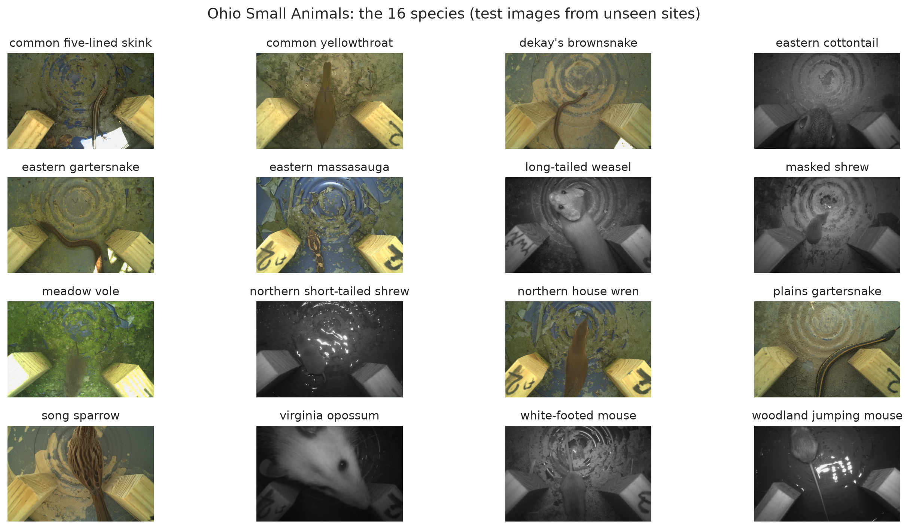
The data is split by site: all cameras of one deployment end up in the same split (Figure 4). A random image-level split would place near-identical frames of the same camera in training and test, and the test score would overestimate performance at a new site. Camera-trap models are known to generalize poorly to unseen locations Beery et al. (2018), so this is the question the test set should answer.
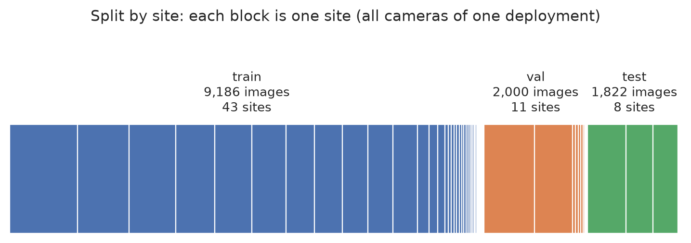
Setup. All methods start from the same backbone: DINOv3 ViT-S/16 Siméoni et al. (2025) (21.6M parameters), pretrained without labels on 1.7 billion curated images. The cameras burn a text bar with date, temperature, and camera name into every frame; it is cropped off so that the model cannot read the camera name. Figure 5 illustrates which parts of the network each method trains.
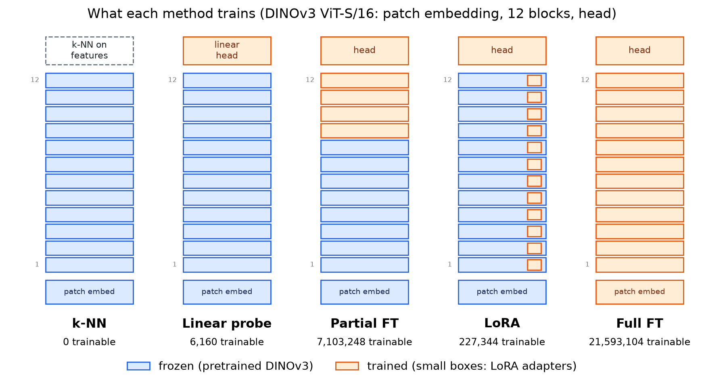
| Method | What is trained | Configuration |
|---|---|---|
| k-NN | nothing | cosine similarity on the CLS token, \(k=20\), similarity-weighted vote |
| Linear probe | one linear layer on the frozen CLS token | logistic regression |
| Partial FT | last 4 of 12 blocks + new head | AdamW, LR \(10^{-4}\) (head \(10^{-3}\)) |
| LoRA | rank-8 adapters on the attention layers of all 12 blocks + new head | AdamW, LR \(5 \cdot 10^{-4}\) (head \(10^{-3}\)) |
| Full FT | everything | AdamW, LR \(10^{-4}\) with layer-wise decay 0.75 (head \(10^{-3}\)) |
Classes are imbalanced (133 to 800 training images per species). The main metric is therefore macro-F1, the mean of the per-species F1 scores, which weighs every species equally.
6.1.1 Results
| Method | Trainable parameters | Test macro-F1 | Test accuracy | Training time | Peak GPU memory |
|---|---|---|---|---|---|
| k-NN | 0 | 0.573 | 0.560 | – | – |
| Linear probe | 6,160 | 0.572 | 0.582 | 26 s | – |
| Partial FT | 7.1M (33%) | 0.850 | 0.846 | 5.8 min | 1.6 GiB |
| LoRA | 227k (1%) | 0.849 | 0.847 | 17.6 min | 3.1 GiB |
| Full FT | 21.6M (100%) | 0.867 | 0.864 | 19.8 min | 4.3 GiB |
The most striking result is the gap between frozen and adapted features (Figure 6). Frozen DINOv3 features reach only 0.57 macro-F1; any method that adapts the backbone reaches 0.85–0.87. Notably, k-NN and the linear probe are tied: a trained linear layer is no better than looking up neighbours. This suggests that the frozen representation does not separate these species well, regardless of the head on top.
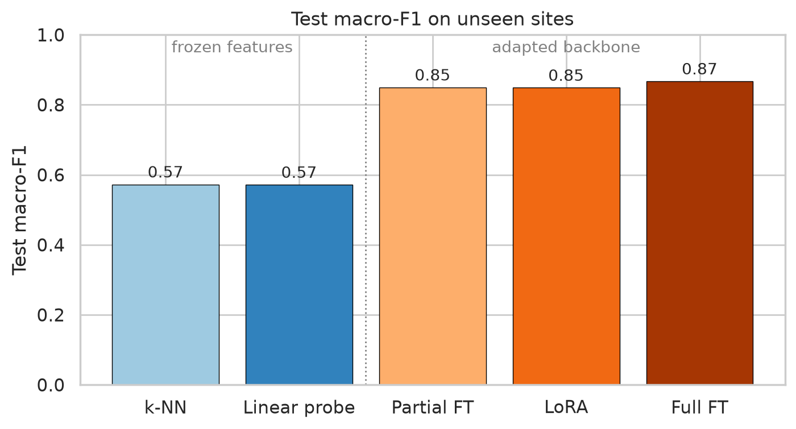
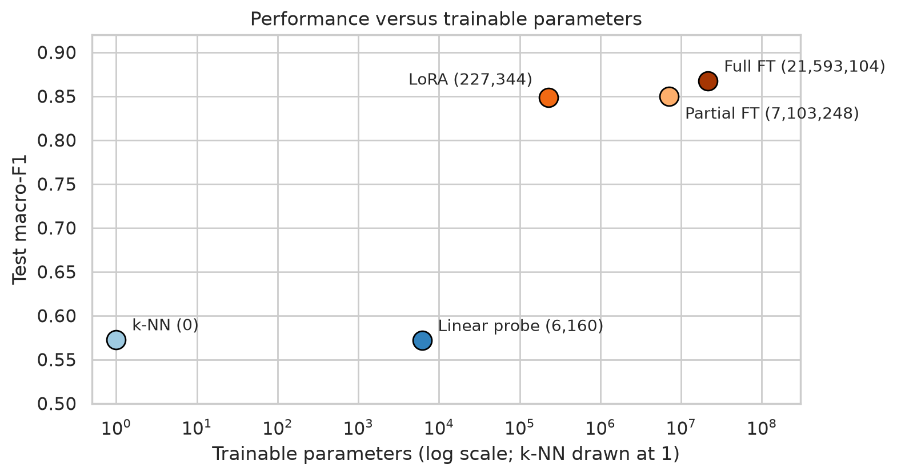
Most of the gain comes from adapting a little. Partial fine-tuning of the last 4 blocks and LoRA with 1% of the parameters both get within 2 points of full fine-tuning. The frozen-feature methods also lose more from validation to test (5–10 points) than the fine-tuned models (1–2.5 points), so their decision boundaries transfer less well to new sites.
6.1.2 Trainable Parameters Are Not Training Cost
Figure 7 illustrates the point made in the LoRA section: few trainable parameters does not mean cheap training. LoRA needs less memory than full fine-tuning (3.1 vs. 4.3 GiB) because no gradients and optimizer states are kept for the frozen weights. But an epoch of LoRA takes as long as an epoch of full fine-tuning (62 s), because gradients still flow back through all 12 blocks to reach the adapters. Partial fine-tuning is faster per epoch (39 s) because backpropagation stops after the last 4 blocks.
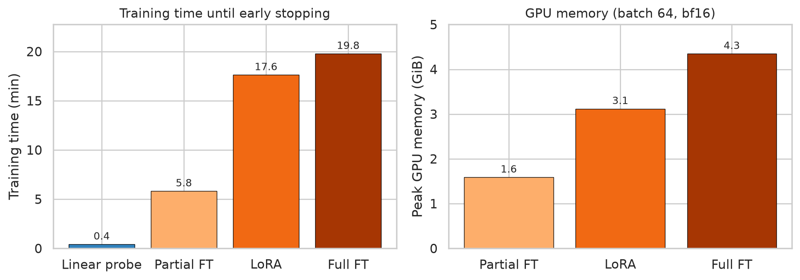
LoRA’s advantage in this experiment is therefore memory and storage: one 227k-parameter adapter per task instead of a full model copy. Speed is not among its benefits here.
Early stopping evaluates the model on the validation set after every epoch, stops when validation macro-F1 has not improved for 3 epochs, and keeps the best weights. Figure 8 demonstrates why this matters: partial fine-tuning peaked after 6 epochs, LoRA after 14, and full fine-tuning after 16. A fixed epoch count would have under- or over-trained some of the methods.
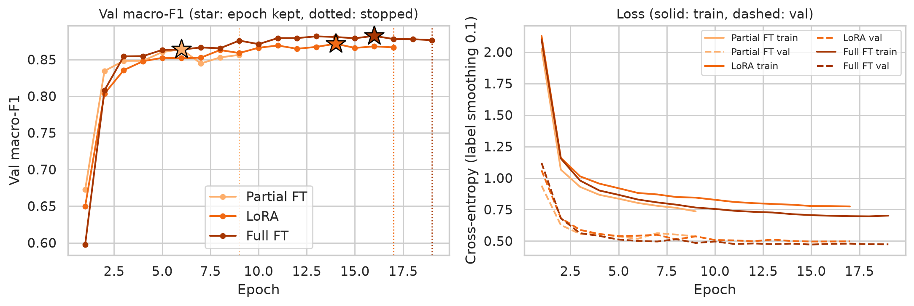
6.1.3 Where Does Fine-Tuning Help?
Aggregate metrics hide which classes benefit. Figure 9 breaks the results down per species. The largest gains are for small mammals that look alike in infrared frames: the recall of the northern short-tailed shrew rises from 0.27 (linear probe) to 0.88 (full fine-tuning), the masked shrew from 0.44 to 0.87. Species with distinctive markings, such as the eastern massasauga, benefit least (0.86 to 0.94).
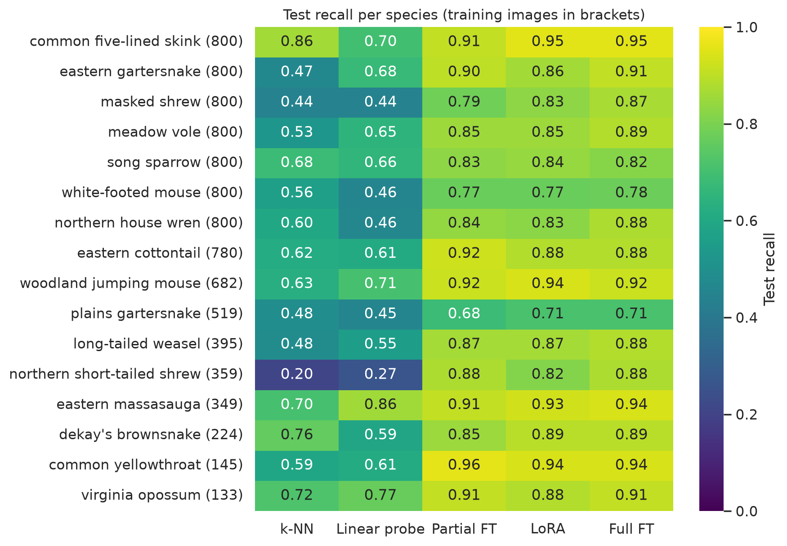
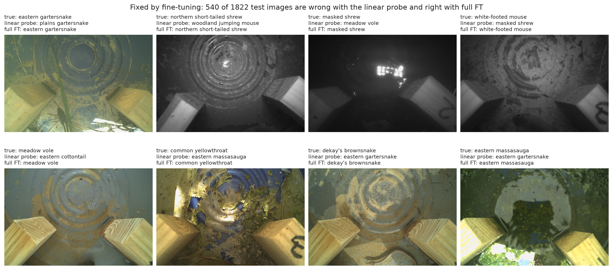
The remaining errors after full fine-tuning are mostly between look-alike species (Figure 11): the plains gartersnake is taken for the eastern gartersnake in 23% of its test images. Interestingly, the images that all five methods get wrong often show the animal only partly or not at all (Figure 12). Labels in the source dataset are assigned per camera sequence, not per frame, so part of the remaining error is label noise rather than model failure.
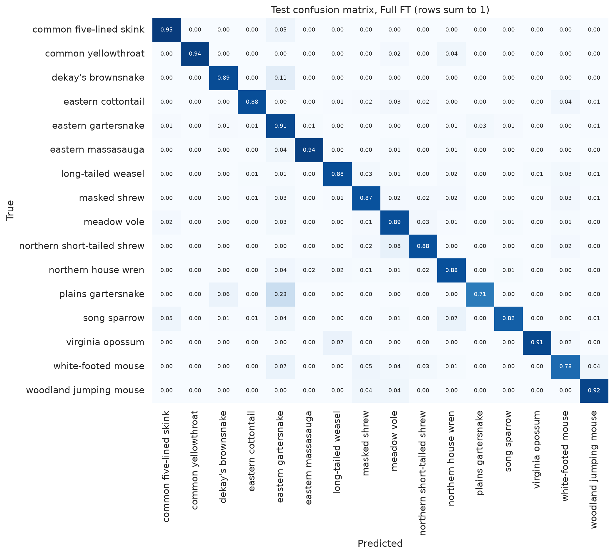
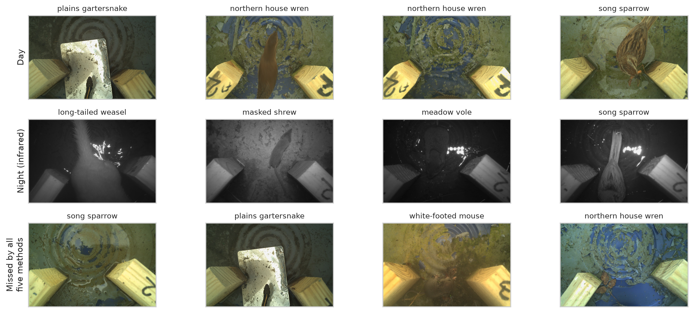
WarningLimitations of this experiment
- One seed per method. Differences of 1–2 points (partial FT vs. LoRA vs. full FT) are within the expected run-to-run variation. The gap of about 28 points between frozen and adapted features is not.
- One label budget. The experiment does not answer how the ranking changes with 50 or 200 labeled images per species.
- Few test sites. The test set comes from 8 sites, and most species appear at only 2–3 of them, so per-species numbers for small classes rest on few camera sequences.
- No tuning. A tuned k-NN or linear probe would likely gain a few points, but not close the gap.
- Small backbone. Frozen features of larger DINOv3 models (ViT-B, ViT-L) are typically stronger, so the gap to fine-tuning would likely be smaller. This was not tested.
🤔 Think About It
Full fine-tuning has the highest test macro-F1 (0.867), followed by partial fine-tuning (0.850) and LoRA (0.849). Which method would you deploy, and what would you need to know before deciding?
Key considerations
- With one seed per method, the 1–2 point differences between the three fine-tuning methods are not reliable. Repeating each run with a few seeds is necessary before ranking them.
- If the three methods are equivalent, other criteria decide: partial fine-tuning trains fastest and uses the least memory, LoRA stores only a small adapter per task, full fine-tuning needs a complete model copy per task.
- Inference cost is identical for all three if the LoRA update is merged into the weights.
- The frozen-feature result is clear despite the single seed: for this domain, adapting the backbone is worthwhile.
A comparison is only fair if all methods use the same training, validation, and test split and the same preprocessing. Even then, no method is universally best: the ranking can change with the dataset, the backbone, and the number of labeled examples.
One quantity can be determined before any experiment: the number of trainable encoder parameters. Table 3 lists it for the ViT-B/16 configurations of the code examples above. Everything else, as the practical example demonstrated, has to be measured.
| Method | Trainable encoder parameters | Share of encoder |
|---|---|---|
| k-NN | 0 | 0% |
| Linear probe | 0 | 0% |
| Partial FT (last 2 blocks) | 14,175,744 | 16.5% |
| Full FT | 85,798,656 | 100% |
| LoRA (\(r=8\), query + value) | 294,912 | 0.34% |
NoteQuiz: Choose What to Adapt
Question: For each task, explain which features you would use and propose a first baseline. When might you update the encoder?
- Species classification from 500 labeled camera-trap images.
- Land-cover segmentation with pixel-level annotations.
- Finding unusual defects with only normal training images.
Click for Answer
- Classification: Global embeddings + k-NN or linear probe. Compare fine-tuning if the baseline is insufficient and the evaluation split separates cameras or locations appropriately.
- Segmentation: Spatial features + segmentation decoder. First assess a frozen encoder with a trainable decoder, then evaluate encoder fine-tuning.
- Anomaly detection: Frozen spatial features and a normal-feature memory bank (e.g., PatchCore-style). No defect labels are required for this baseline; evaluate whether anomaly scores identify genuinely new defects.
7 Takeaways
- Choose the representation first. Backbone pretraining and target domain can matter more than the adaptation algorithm.
- Start with frozen features. k-NN and linear probing are inexpensive, useful diagnostics.
- Match the head to the task. Classification, retrieval, anomaly detection, and segmentation use different outputs and objectives.
- Fine-tune when justified. Partial/full FT and LoRA are alternatives to compare, not fixed stages on a ladder.
- Measure the right costs. Trainable parameters, memory, training time, and inference latency are not interchangeable.
- Use held-out evidence. Better training accuracy does not establish successful adaptation.
8 References
Beery, Sara, Grant Van Horn, and Pietro Perona. 2018. “Recognition in Terra Incognita.” Lecture Notes in Computer Science (Including Subseries Lecture Notes in Artificial Intelligence and Lecture Notes in Bioinformatics) 11220 LNCS (July): 472–89. https://doi.org/10.1007/978-3-030-01270-0_28.
Hu, Edward J., Yelong Shen, Phillip Wallis, et al. 2021. LoRA: Low-Rank Adaptation of Large Language Models. arXiv. https://doi.org/10.48550/arXiv.2106.09685.
Roth, Karsten, Latha Pemula, Joaquin Zepeda, Bernhard Schölkopf, Thomas Brox, and Peter Gehler. 2022. Towards Total Recall in Industrial Anomaly Detection. arXiv. https://doi.org/10.48550/arXiv.2106.08265.
Siméoni, Oriane, Huy V. Vo, Maximilian Seitzer, et al. 2025. DINOv3. arXiv. https://doi.org/10.48550/arXiv.2508.10104.